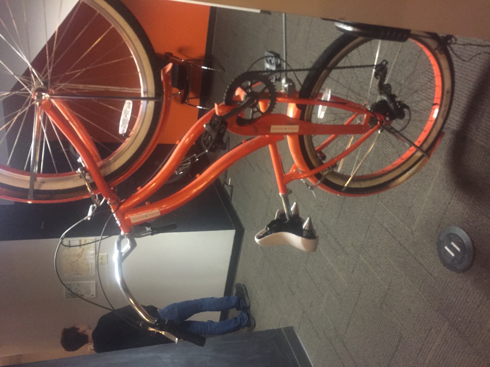

While at Archer Malmo they had someone, who toured us around and told us about the company. They started the tour with the first problem which was actually getting us to the right floors of the building. They would not let us use the stairs since they did not check to make sure it was fully safe for all of the people to go up it at once. To get around this they sent us up the elevator and slowly got us to the fourth floor. Once we all got up to the fourth floor we were greeted by Gabe. He worked there and was the guide for the rest of the trip there.
This is where most of the tour was held. Once we sat down Gabe started giving background information on Archer Malmo. He explained how it originally was a company of just a few people by a different name. Then later in said company’s life it was bought out by Archer Malmo and then became one of the branches. He also showed us what they do at the company. They create and design website layouts and test them. To test the sites, they hired people who test the sites on multiple browsers, devices, operating systems, screen sizes, resolutions ect.
This is where the main lobby is located. They have meeting rooms off to both sides. They had a popcorn maker near the front desk. At the front desk they had multiple tvs set up playing random channels. One was playing Cake Wars and was entertaining to watch while they transported us to the lower level. They sent us down in groups via elevator. It took around 8 minutes to get all of us into the lower level.
This was by far the coolest floor that we were shown. On this floor they have an infinity room and recording studio. The infinity room is a large room made up of a green screen, blue screen, and a white wall stretching the rest of the room. In this room we were explained that this is a recent addition to the building and is basically one big testing room. They are currently testing with drones and VR in the infinity room. They also use the room for yoga once a week.
In the infinity room they were also filming a stop motion ad for a company they left un-named. They used the blue screen in the corner to film the ad and used a table for a prop. They had a bike hung up, the bike was located on the fourth floor. It was one of the first things everyone noticed and impressed a lot of us. (photo below) It used a Shimano tourney drivetrain and had the commuter frame style. Overall I would of hoped we would learn more from the field trip but it was still a very fun experience.
